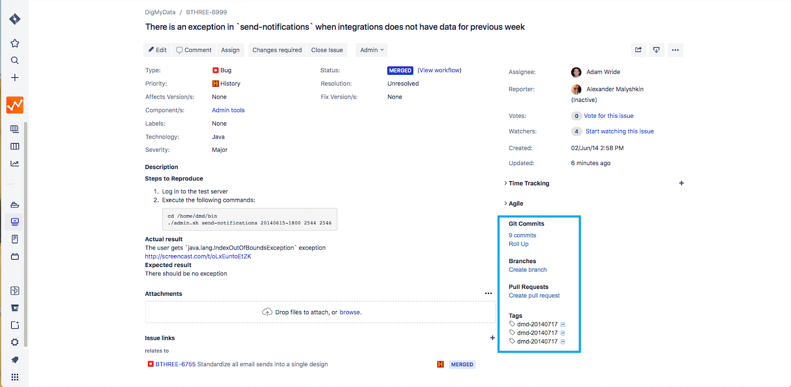
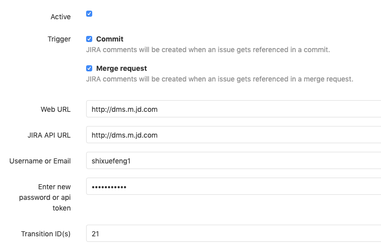
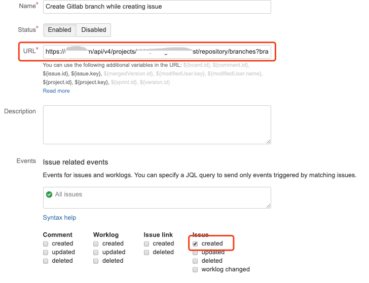

需求管理 - Jira
在 Jira 官网上的醒目位置，写着一句话：敏捷开发工具的第一选择。在我看来，Atlassian 公司的确有这个底气，因为 Jira 确实足够优秀，跟 Confluence 的组合几乎已经成为了很多企业的标配。
当然，近些年来，各大厂商也在积极地对外输出研发工具能力，以腾讯的 TAPD 为代表的敏捷协同开发工具，就使用得非常广泛。但是，其实产品的思路都大同小异，搞定了 Jira，其他工具基本也就不在话下了。
作为敏捷协同工具，Jira 新建工程可以选择团队的研发模式是基于 Scrum，还是看板方法，你可以按需选择。
看板的配置过程并不复杂，我把它整理成了文档，你可以点击网盘链接获取，提取码是 mrtd。需要提醒你的一点是：别忘了添加 WIP 在制品约束，别让你的精益看板变成了可视化看板。
需求作为一切开发工作的起点，是贯穿整个研发工作的重要抓手。对于 Jira 来说，重点是要实现跟版本控制系统和开发者工具的打通。接下来，我们分别来看下应该如何实现。
如果你也在使用特性分支开发模式，你应该知道，一个特性就对应到一个 Jira 中的任务。通过任务来创建特性分支，并且将所有分支上的提交绑定到具体任务上，从而建立清晰的特性代码关联。我给你推荐两种实现方式。
第一种方式是基于 Jira 提供的原生插件，比如 Git Integration for Jira。这个插件配置起来非常简单，你只需要添加版本控制系统的地址和认证方式即可。然后，你就可以在 Jira 上进行查看提交信息、对比差异、创建分支和 MR 等操作。但是这个插件属于收费版本，你可以免费使用 30 天，到期更新即可。

第二种方式，就是**使用 Jira 和 GitLab 的 Webhook 进行打通**。
首先，你要在 GitLab 项目的“设置 - 集成”中找到 Jira 选项，按下图添加相应配置即可。配置完成之后，你只需要在提交注释中添加一个 Jira 的任务 ID，就可以实现 Jira 任务和代码提交的关联，这些关联体现在 Jira 任务的 Issue links 部分。
另外，你也可以实现 Jira 任务的状态自动流转操作，无需手动移动任务卡片。我给你提供一份 配置说明 ，你可以参考一下。

不过，如果只是这样的话，还不能实现根据 Jira 任务来自动创建分支，所以接下来，还要进行 Jira 的 Webhook 配置。在 Jira 的系统管理界面中，你可以找到“高级设置 - Webhook”选项，添加 Webhook 后，可以绑定各种系统提供的事件，比如创建任务、更新任务等，这基本可以满足绝大多数场景的需求。
假设我们的系统在创建 Jira 任务的时候，要自动在 GitLab 中基于主线创建一条分支，那么你可以将 GitLab 提供的创建分支 API 写在 Jira 触发的 Webhook 地址中。参考样例如下：
https : // 这里替换成你的 GitLab 服务地址 /repository/branches?branch=${issue.key}&ref=master&private_token=[这里替换成你的账号 Token]

到这里，Jira 和 GitLab 的打通就完成了。我们来总结下已经实现的功能：
- GitLab 每次代码变更状态都会同步到 Jira 任务中，并且实现了 Jira 任务和代码的自动关联（Issue links）；
- 可以在 MR 中增加关键字 Fixes/Resolves/Closes Jira 任务号，实现 Jira 的自动状态流转；
- 每次在 Jira 中创建任务时，都会自动创建特性分支。
关于 Jira 和开发者工具的打通，我把操作步骤也分享给你。你可以点击网盘链接获取，提取码是 kf3t。现在很多工具平台的建设都是以服务开发者为导向的，所以距离开发者最近的 IDE 工具就成了新的效率提升阵地，包括云 IDE、IDE 插件等，都是为了方便开发者可以在 IDE 里面完成所有的日常任务，对于管理分支和 Jira 任务，自然也不在话下。